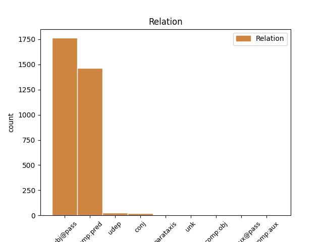
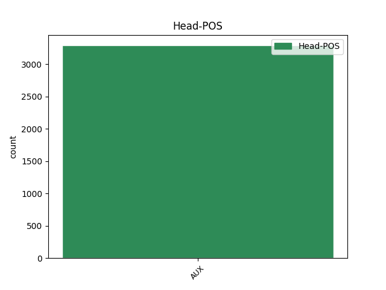
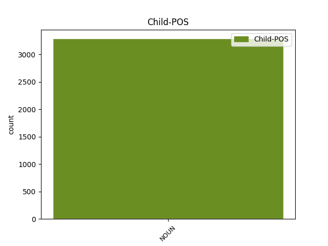

Distribution of features within this leaf



Agreement Rules sorted by frequency.
- When the dependent token is the subject(subj@pass) of the head token, and the head token is AUX and the dependent token is NOUN.
1 Das _ _ _ _ 0 _ _ _
2 Innere Innere NOUN NN Case=Nom|Gender=Neut|Number=Sing 3 subj@pass _ _
3 wurde werden AUX VAFIN Mood=Ind|Number=Sing|Person=3|Tense=Past|VerbForm=Fin|Voice=Pass 0 _ _ _
4 1956 _ _ _ _ 0 _ _ _
5 stärker _ _ _ _ 0 _ _ _
6 verändert _ _ _ _ 0 _ _ _
7 . _ _ _ _ 0 _ _ _
1 Davidsson _ _ _ _ 0 _ _ _
2 promovierte _ _ _ _ 0 _ _ _
3 1991 _ _ _ _ 0 _ _ _
4 mit _ _ _ _ 0 _ _ _
5 einer _ _ _ _ 0 _ _ _
6 Arbeit _ _ _ _ 0 _ _ _
7 über _ _ _ _ 0 _ _ _
8 Matthias _ _ _ _ 0 _ _ _
9 Weckmann _ _ _ _ 0 _ _ _
10 und _ _ _ _ 0 _ _ _
11 war sein AUX VAFIN Mood=Ind|Number=Sing|Person=3|Tense=Past|VerbForm=Fin 0 _ _ _
12 dadurch _ _ _ _ 0 _ _ _
13 der _ _ _ _ 0 _ _ _
14 erste _ _ _ _ 0 _ _ _
15 Absolvent Absolvent NOUN NN Case=Nom|Gender=Masc|Number=Sing 11 comp:pred _ _
16 eines _ _ _ _ 0 _ _ _
17 wissenschaftlich _ _ _ _ 0 _ _ _
18 - _ _ _ _ 0 _ _ _
19 künstlerischen _ _ _ _ 0 _ _ _
20 Studiums _ _ _ _ 0 _ _ _
21 in _ _ _ _ 0 _ _ _
22 Schweden _ _ _ _ 0 _ _ _
23 . _ _ _ _ 0 _ _ _
1 Ein _ _ _ _ 0 _ _ _
2 Jahr Jahr NOUN NN Case=Acc|Gender=Neut|Number=Sing 4 udep _ _
3 später _ _ _ _ 0 _ _ _
4 wurde werden AUX VAFIN Mood=Ind|Number=Sing|Person=3|Tense=Past|VerbForm=Fin|Voice=Pass 0 _ _ _
5 Cohen _ _ _ _ 0 _ _ _
6 in _ _ _ _ 0 _ _ _
7 dem _ _ _ _ 0 _ _ _
8 Film _ _ _ _ 0 _ _ _
9 Bugsy _ _ _ _ 0 _ _ _
10 , _ _ _ _ 0 _ _ _
11 der _ _ _ _ 0 _ _ _
12 sich _ _ _ _ 0 _ _ _
13 mit _ _ _ _ 0 _ _ _
14 dem _ _ _ _ 0 _ _ _
15 Aufbau _ _ _ _ 0 _ _ _
16 des _ _ _ _ 0 _ _ _
17 Casino _ _ _ _ 0 _ _ _
18 - _ _ _ _ 0 _ _ _
19 Hotels _ _ _ _ 0 _ _ _
20 Flamingo _ _ _ _ 0 _ _ _
21 durch _ _ _ _ 0 _ _ _
22 Bugsy _ _ _ _ 0 _ _ _
23 Siegel _ _ _ _ 0 _ _ _
24 befasst _ _ _ _ 0 _ _ _
25 , _ _ _ _ 0 _ _ _
26 von _ _ _ _ 0 _ _ _
27 Harvey _ _ _ _ 0 _ _ _
28 Keitel _ _ _ _ 0 _ _ _
29 dargestellt _ _ _ _ 0 _ _ _
30 . _ _ _ _ 0 _ _ _
1 Kupfer _ _ _ _ 0 _ _ _
2 wird werden AUX VAFIN Mood=Ind|Number=Sing|Person=3|Tense=Pres|VerbForm=Fin|Voice=Pass 0 _ _ _
3 durch _ _ _ _ 0 _ _ _
4 Schmelzen _ _ _ _ 0 _ _ _
5 mit _ _ _ _ 0 _ _ _
6 Natriumsulfid _ _ _ _ 0 _ _ _
7 beseitigt _ _ _ _ 0 _ _ _
8 , _ _ _ _ 0 _ _ _
9 Gold Gold NOUN NN Case=Nom|Gender=Masc|Number=Sing 2 conj _ _
10 und _ _ _ _ 0 _ _ _
11 Silber _ _ _ _ 0 _ _ _
12 durch _ _ _ _ 0 _ _ _
13 Extraktion _ _ _ _ 0 _ _ _
14 des _ _ _ _ 0 _ _ _
15 geschmolzenen _ _ _ _ 0 _ _ _
16 Bismuts _ _ _ _ 0 _ _ _
17 mit _ _ _ _ 0 _ _ _
18 Zinn _ _ _ _ 0 _ _ _
19 . _ _ _ _ 0 _ _ _
1 Angeprangert _ _ _ _ 0 _ _ _
2 werden _ _ _ _ 0 _ _ _
3 soll sollen AUX VMFIN Mood=Ind|Number=Sing|Person=3|Tense=Pres|VerbForm=Fin 0 _ _ _
4 , _ _ _ _ 0 _ _ _
5 so _ _ _ _ 0 _ _ _
6 der _ _ _ _ 0 _ _ _
7 einführende _ _ _ _ 0 _ _ _
8 Text Text NOUN NN Case=Nom|Gender=Masc|Number=Sing 3 parataxis _ SpaceAfter=No
9 , _ _ _ _ 0 _ _ _
10 der _ _ _ _ 0 _ _ _
11 " _ _ _ _ 0 _ _ _
12 Falschmünzcharakter _ _ _ _ 0 _ _ _
13 einer _ _ _ _ 0 _ _ _
14 restaurativen _ _ _ _ 0 _ _ _
15 Epoche _ _ _ _ 0 _ _ _
16 . _ _ _ _ 0 _ _ _
17 " _ _ _ _ 0 _ _ _
1 Der _ _ _ _ 0 _ _ _
2 Vorgängerbau Vorgängerbau NOUN NN Case=Nom|Gender=Masc|Number=Sing 6 unk _ _
3 des _ _ _ _ 0 _ _ _
4 heutigen _ _ _ _ 0 _ _ _
5 Käfigturmes _ _ _ _ 0 _ _ _
6 wurde werden AUX VAFIN Mood=Ind|Number=Sing|Person=3|Tense=Past|VerbForm=Fin|Voice=Pass 0 _ _ _
7 1256 _ _ _ _ 0 _ _ _
8 in _ _ _ _ 0 _ _ _
9 dem _ _ _ _ 0 _ _ _
10 Zuge _ _ _ _ 0 _ _ _
11 der _ _ _ _ 0 _ _ _
12 zweiten _ _ _ _ 0 _ _ _
13 Stadtbefestigung _ _ _ _ 0 _ _ _
14 auf _ _ _ _ 0 _ _ _
15 Befehl _ _ _ _ 0 _ _ _
16 von _ _ _ _ 0 _ _ _
17 Peter _ _ _ _ 0 _ _ _
18 II _ _ _ _ 0 _ _ _
19 . _ _ _ _ 0 _ _ _
1 Die _ _ _ _ 0 _ _ _
2 Heimspiele _ _ _ _ 0 _ _ _
3 werden _ _ _ _ 0 _ _ _
4 in _ _ _ _ 0 _ _ _
5 dem _ _ _ _ 0 _ _ _
6 SKK _ _ _ _ 0 _ _ _
7 Neftechimik _ _ _ _ 0 _ _ _
8 ausgetragen _ _ _ _ 0 _ _ _
9 , _ _ _ _ 0 _ _ _
10 welche _ _ _ _ 0 _ _ _
11 eine _ _ _ _ 0 _ _ _
12 Kapazität Kapazität NOUN NN Case=Acc|Gender=Fem|Number=Sing 16 comp:obj _ _
13 für _ _ _ _ 0 _ _ _
14 5.500 _ _ _ _ 0 _ _ _
15 Besucher _ _ _ _ 0 _ _ _
16 hat haben AUX VAFIN Mood=Ind|Number=Sing|Person=3|Tense=Pres|VerbForm=Fin 0 _ _ _
17 . _ _ _ _ 0 _ _ _
1 Nach _ _ _ _ 0 _ _ _
2 dem _ _ _ _ 0 _ _ _
3 Auftreten Auftreten NOUN NN Case=Dat|Gender=Neut|Number=Sing 15 comp:aux@pass _ _
4 der _ _ _ _ 0 _ _ _
5 ersten _ _ _ _ 0 _ _ _
6 AIDS _ _ _ _ 0 _ _ _
7 - _ _ _ _ 0 _ _ _
8 Krankheitsfälle _ _ _ _ 0 _ _ _
9 1981 _ _ _ _ 0 _ _ _
10 und _ _ _ _ 0 _ _ _
11 einer _ _ _ _ 0 _ _ _
12 beginnenden _ _ _ _ 0 _ _ _
13 gesellschaftlichen _ _ _ _ 0 _ _ _
14 Diskussion _ _ _ _ 0 _ _ _
15 wurde werden AUX VAFIN Mood=Ind|Number=Sing|Person=3|Tense=Past|VerbForm=Fin|Voice=Pass 0 _ _ _
16 die _ _ _ _ 0 _ _ _
17 Deutsche _ _ _ _ 0 _ _ _
18 AIDS _ _ _ _ 0 _ _ _
19 - _ _ _ _ 0 _ _ _
20 Hilfe _ _ _ _ 0 _ _ _
21 e.V. _ _ _ _ 0 _ _ _
22 ( _ _ _ _ 0 _ _ _
23 DAH _ _ _ _ 0 _ _ _
24 ) _ _ _ _ 0 _ _ _
25 an _ _ _ _ 0 _ _ _
26 dem _ _ _ _ 0 _ _ _
27 23 _ _ _ _ 0 _ _ _
28 . _ _ _ _ 0 _ _ _
Disagree Examples:
1 Die _ _ _ _ 0 _ _ _
2 Zimmer _ _ _ _ 0 _ _ _
3 sind sein AUX VAFIN Mood=Ind|Number=Plur|Person=3|Tense=Pres|VerbForm=Fin 0 _ _ _
4 total _ _ _ _ 0 _ _ _
5 heruntergekommen _ _ _ _ 0 _ _ _
6 , _ _ _ _ 0 _ _ _
7 ungepflegt _ _ _ _ 0 _ _ _
8 , _ _ _ _ 0 _ _ _
9 veraltete _ _ _ _ 0 _ _ _
10 Einrichtung Einrichtung NOUN NN Case=Nom|Gender=Fem|Number=Sing 3 parataxis _ SpaceAfter=No
11 , _ _ _ _ 0 _ _ _
12 harte _ _ _ _ 0 _ _ _
13 Matrazen _ _ _ _ 0 _ _ _
14 und _ _ _ _ 0 _ _ _
15 verwohnt _ _ _ _ 0 _ _ _
16 . _ _ _ _ 0 _ _ _
1 Wir _ _ _ _ 0 _ _ _
2 haben _ _ _ _ 0 _ _ _
3 uns _ _ _ _ 0 _ _ _
4 übrigens _ _ _ _ 0 _ _ _
5 3 _ _ _ _ 0 _ _ _
6 verschiedene _ _ _ _ 0 _ _ _
7 Zimmer _ _ _ _ 0 _ _ _
8 angesehen _ _ _ _ 0 _ _ _
9 und _ _ _ _ 0 _ _ _
10 alle _ _ _ _ 0 _ _ _
11 waren sein AUX VAFIN Mood=Ind|Number=Plur|Person=3|Tense=Past|VerbForm=Fin 0 _ _ _
12 eine _ _ _ _ 0 _ _ _
13 Katastrophe Katastrophe NOUN NN Case=Nom|Gender=Fem|Number=Sing 11 comp:pred _ SpaceAfter=No
14 . _ _ _ _ 0 _ _ _
1 Die _ _ _ _ 0 _ _ _
2 Dachschrägen _ _ _ _ 0 _ _ _
3 konnten _ _ _ _ 0 _ _ _
4 bestens _ _ _ _ 0 _ _ _
5 genutzt _ _ _ _ 0 _ _ _
6 werden _ _ _ _ 0 _ _ _
7 und _ _ _ _ 0 _ _ _
8 die _ _ _ _ 0 _ _ _
9 Schränke Schrank NOUN NN Case=Nom|Gender=Fem|Number=Sing 11 subj@pass _ _
10 selbst _ _ _ _ 0 _ _ _
11 sind sein AUX VAFIN Mood=Ind|Number=Plur|Person=3|Tense=Pres|VerbForm=Fin 0 _ _ _
12 auch _ _ _ _ 0 _ _ _
13 sehr _ _ _ _ 0 _ _ _
14 toll _ _ _ _ 0 _ _ _
15 geworden _ _ _ _ 0 _ _ _
16 . _ _ _ _ 0 _ _ _
1 Wenn _ _ _ _ 0 _ _ _
2 man _ _ _ _ 0 _ _ _
3 bis _ _ _ _ 0 _ _ _
4 20h _ _ _ _ 0 _ _ _
5 offen _ _ _ _ 0 _ _ _
6 hat _ _ _ _ 0 _ _ _
7 , _ _ _ _ 0 _ _ _
8 sollten _ _ _ _ 0 _ _ _
9 Kunden _ _ _ _ 0 _ _ _
10 , _ _ _ _ 0 _ _ _
11 die _ _ _ _ 0 _ _ _
12 um _ _ _ _ 0 _ _ _
13 17 _ _ _ _ 0 _ _ _
14 Uhr _ _ _ _ 0 _ _ _
15 vorbeikommen _ _ _ _ 0 _ _ _
16 , _ _ _ _ 0 _ _ _
17 doch _ _ _ _ 0 _ _ _
18 noch _ _ _ _ 0 _ _ _
19 eine _ _ _ _ 0 _ _ _
20 Chance Chance NOUN NN Case=Acc|Gender=Fem|Number=Sing 21 comp:obj _ _
21 haben haben AUX VAFIN Mood=Ind|Number=Plur|Person=3|Tense=Pres|VerbForm=Fin 0 _ _ _
22 ... _ _ _ _ 0 _ _ _
1 Unsere _ _ _ _ 0 _ _ _
2 Erwartungen Erwartung NOUN NN Case=Nom|Gender=Fem|Number=Plur 3 subj@pass _ _
3 wurde werden AUX VAFIN Mood=Ind|Number=Sing|Person=3|Tense=Past|VerbForm=Fin|Voice=Pass 0 _ _ _
4 nicht _ _ _ _ 0 _ _ _
5 enttäuscht _ _ _ _ 0 _ _ _
6 ! _ _ _ _ 0 _ _ _
7 ! _ _ _ _ 0 _ _ _